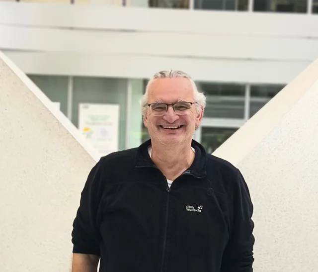
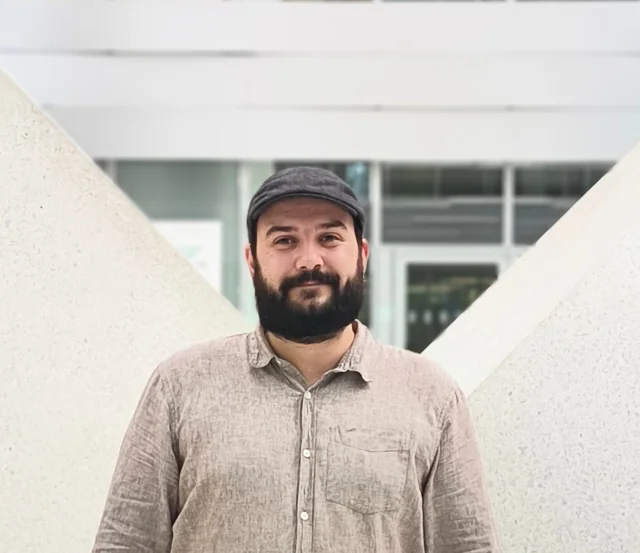
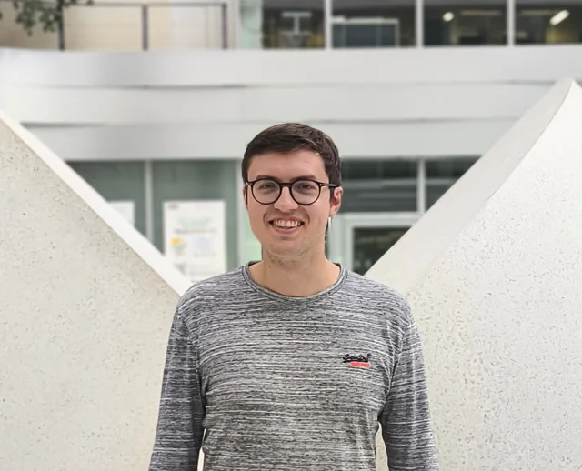
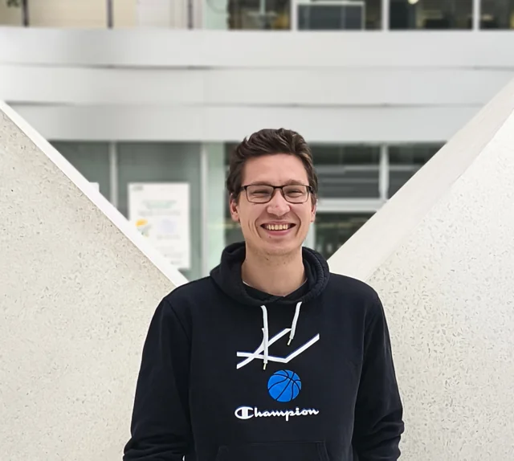

The sharp one-dimensional Lieb-Thirring inequality
Marvin R. Schulz
14:00–16:30
Building 20.30, SR 3.068Winter 2026/27 · Karlsruhe
Bringing together researchers in quantum physics, mathematical physics, and spectral theory.
New semester
29 September 2026 · Further talks to be announced
Marvin R. Schulz
14:00–16:30
Building 20.30, SR 3.068Try another search or view the full programme.
1 talk
All times are local to Karlsruhe (Europe/Berlin). On 29 September: CEST (UTC+2).
About Kuantum
Kuantum is a seminar series in Karlsruhe bringing together researchers working on quantum mechanics, spectral theory, mathematical physics, and related areas.
From the ionization of atoms to quantum gases and spectral asymptotics, the programme offers a space to exchange ideas and discuss current research.
Explore past seminarsTalks take place in person, on Zoom, or in a hybrid format. Check the location listed for each talk and contact us for room details or online access.
Ask for joining detailsWorking on a question that belongs in the programme? Get in touch with the organizers to discuss a seminar talk.
Propose a talkThe people behind Kuantum

Head of Kuantum
Scientific direction and programme.

Seminar organizer
Scheduling, speaker communication, and logistics.
marvin.schulz@kit.edu ↗
Technical coordinator
Digital infrastructure and online services.

Technical coordinator
Seminar technology and communications.
Get in touch
Questions, talk proposals, and seminar information.